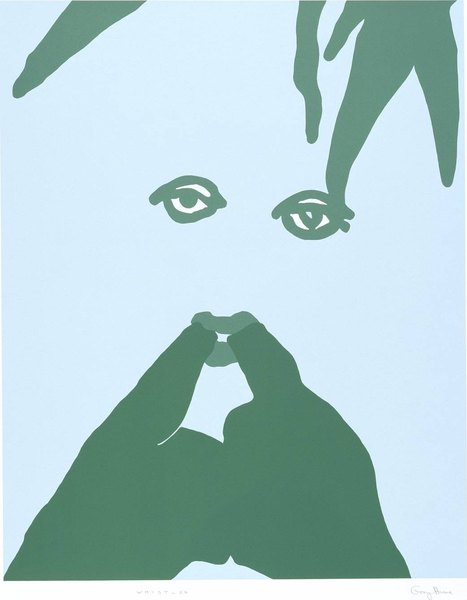
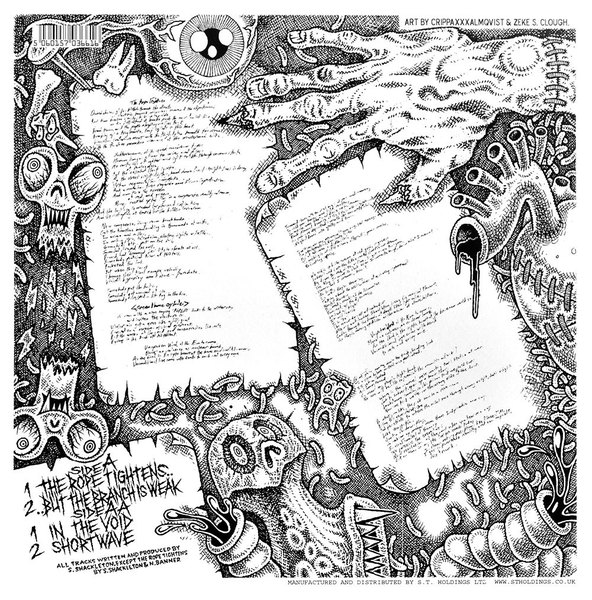

CRVI000241Phil Baines - Why I Am So Wise
Cover for Friedrich Nietzsche · Penguin Great Ideas · 2004
Cover for Friedrich Nietzsche · Penguin Great Ideas · 2004

CRVI000243Jim Stoddart - Horse Under Water
Cover for Len Deighton · Penguin · 2021
Cover for Len Deighton · Penguin · 2021

CRVI000245Peter Bentley - Urgent Copy
Cover for Anthony Burgess · Penguin
Cover for Anthony Burgess · Penguin

CRVI000250Peter Bentley - The Wanting Seed
Cover for Anthony Burgess · Penguin
Cover for Anthony Burgess · Penguin

CRVI000367Peter Bentley - The Malayan Trilogy
Cover for Anthony Burgess · Penguin
Cover for Anthony Burgess · Penguin

CRVI000375Alan Aldridge - Hare Sitting Up
Cover for Michael Innes · Penguin Crime
Cover for Michael Innes · Penguin Crime

CRVI000416Alan Aldridge - Docken Dead
Cover for John Trench · Penguin Crime
Cover for John Trench · Penguin Crime

CRVI000437Unknown - Marx in His Own Words
Cover for Ernst Fischer · Pelican
Cover for Ernst Fischer · Pelican

CRVI000438John McConnell - The Concept of Mind
Cover for Gilbert Ryle · Penguin University Books
Cover for Gilbert Ryle · Penguin University Books

CRVI000439Unknown - Sanity, Madness and the Family
Cover for R. D. Laing and A. Esterson · Pelican
Cover for R. D. Laing and A. Esterson · Pelican

CRVI000440Unknown - After Hitler
Cover for Jürgen Neven-du Mont · Pelican
Cover for Jürgen Neven-du Mont · Pelican

CRVI000441David Pelham - Tiger! Tiger!
Cover for Alfred Bester · Penguin Science Fiction
Cover for Alfred Bester · Penguin Science Fiction

CRVI000442David Pelham - The Demolished Man
Cover for Alfred Bester · Penguin Science Fiction
Cover for Alfred Bester · Penguin Science Fiction

CRVI000443David Pelham - The Drowned World
Cover for J. G. Ballard · Penguin Science Fiction · 1974
Cover for J. G. Ballard · Penguin Science Fiction · 1974

CRVI000444David Pelham - The Drought
Cover for J. G. Ballard · Penguin Science Fiction · 1974
Cover for J. G. Ballard · Penguin Science Fiction · 1974

CRVI000445John Griffith - The Black Cloud
Cover for Fred Hoyle · Penguin
Cover for Fred Hoyle · Penguin

CRVI000446Unknown - The New Men
Cover for C. P. Snow · Penguin
Cover for C. P. Snow · Penguin

CRVI000447Derek Birdsall - Ideology
Cover for L. B. Brown · Penguin Education · 1972
Cover for L. B. Brown · Penguin Education · 1972

CRVI000448Derek Birdsall - Socialization
Cover for Kurt Danziger · Penguin Education · 1972
Cover for Kurt Danziger · Penguin Education · 1972

CRVI000449Derek Birdsall - Peasants and Peasant Societies
Cover for Teodor Shanin · Penguin Education · 1972
Cover for Teodor Shanin · Penguin Education · 1972

CRVI000450Derek Birdsall - Social Science and Public Policy
Cover for Martin Rein · Penguin Education · 1972
Cover for Martin Rein · Penguin Education · 1972

CRVI000451Derek Birdsall - Creativity
Cover for P. E. Vernon · Penguin Education · 1972
Cover for P. E. Vernon · Penguin Education · 1972

CRVI000452Derek Birdsall - Reconstructing Social Psychology
Cover for Nigel Armistead · Penguin Education · 1972
Cover for Nigel Armistead · Penguin Education · 1972

CRVI000453Derek Birdsall - Culture Against Man
Cover for Jules Henry · Penguin Education · 1972
Cover for Jules Henry · Penguin Education · 1972

CRVI000454Peter Bentley - Brideshead Revisited
Cover for Evelyn Waugh · Penguin
Cover for Evelyn Waugh · Penguin

CRVI000455Jim Stoddart - Billion Dollar Brain
Cover for Len Deighton · Penguin · 2021
Cover for Len Deighton · Penguin · 2021

CRVI000456Peter Bentley - Helena
Cover for Evelyn Waugh · Penguin
Cover for Evelyn Waugh · Penguin

CRVI000458Alan Aldridge - Operation Pax
Cover for Michael Innes · Penguin Crime
Cover for Michael Innes · Penguin Crime

CRVI000459Alan Aldridge - Hamlet, Revenge!
Cover for Michael Innes · Penguin Crime
Cover for Michael Innes · Penguin Crime

CRVI000460Alan Aldridge - Suspicious Circumstances
Cover for Patrick Quentin · Penguin Crime
Cover for Patrick Quentin · Penguin Crime

CRVI000856The Face - Hideous Kinky
The Face, issue 26, Spring 2026 · pages 14–15 · 2026
The Face, issue 26, Spring 2026 · pages 14–15 · 2026

CRVI001456Dante Gabriel Rossetti - Ecce Ancilla Domini! (The Annunciation)
1849–50
1849–50

CRVI001458William Morris - Strawberry Thief
Textile · c. 1936
Textile · c. 1936

CRVI001459William Morris - Kennet
Textile · c. 1920
Textile · c. 1920

CRVI001460William Morris - Violet and Columbine
Textile · 1883
Textile · 1883

CRVI001461John William Waterhouse - Dolce far Niente
1879
1879

CRVI001462John William Waterhouse - A Neapolitan Flax Spinner
1877
1877

CRVI001463John William Waterhouse - The Magic Circle
1886
1886

CRVI001464John William Waterhouse - Diogenes
1882
1882

CRVI001465Simeon Solomon - Self-Portrait
1860
1860

CRVI001466Unidentified - Nursery interior with a child in a wicker cradle-cart

CRVI001467Albert Joseph Moore - Midsummer
1887
1887

CRVI001468Albert Joseph Moore - A Reverie
1892
1892

CRVI001469Aubrey Beardsley - Isolde
1895
1895

CRVI001470Aubrey Beardsley - How La Beale Isoud Wrote to Sir Tristram

CRVI001471Aubrey Beardsley - The Climax
1893
1893

CRVI001506Wyndham Lewis - Workshop
1915
1915

CRVI001507David Bomberg - Ju-Jitsu
1913
1913

CRVI001508Edward Wadsworth - Illustration (Typhoon)
1914–1915
1914–1915

CRVI001509Edward Wadsworth - Abstract Composition
1915
1915

CRVI001510Frederick Etchells - Vorticist Composition

CRVI001603John William Waterhouse - Circe Invidiosa
1892
1892

CRVI001604John William Waterhouse - Circe Offering the Cup to Odysseus
1891
1891

CRVI001605John William Waterhouse - The Charmer
1911
1911

CRVI001606John William Waterhouse - Day Dreams
1912
1912

CRVI001616Charles Rennie Mackintosh - Décor de la salle à manger, House for an Art Lover, Glasgow
1901
1901

CRVI001740David Bomberg - In the Hold
1914
1914

CRVI001741David Bomberg - Barges
1919
1919

CRVI001811Richard Hamilton - Portrait of Hugh Gaitskell as a Famous Monster of Filmland
1964
1964

CRVI001812Richard Hamilton - Just what is it that makes today's homes so different, so appealing?
1956
1956

CRVI001813Richard Hamilton - Swingeing London 67 (f)
1969
1969

CRVI001814Peter Blake - The Beach Boys
1964
1964

CRVI001815Eduardo Paolozzi - Sack-o-Sauce
1948
1948

CRVI001816Pauline Boty - Colour Her Gone
1962
1962

CRVI001817Pauline Boty - With Love to Jean-Paul Belmondo

CRVI001818Pauline Boty - Big Jim Colosimo
1963
1963

CRVI001820Bridget Riley - Movement in Squares

CRVI001821Bridget Riley - Chevron composition

CRVI001934Damien Hirst - God Alone Knows
2007
2007

CRVI001935Unidentified - Stuffed forms on a chair

CRVI001936Chris Ofili - Within Reach
2003
2003

CRVI001937Gary Hume - Whistler
1998
1998

CRVI001938Unidentified - Woman with pink flowers

CRVI001939Gary Hume - One Eyed Person

CRVI001940Mat Collishaw - All Things Fall
Detail · 2014–2017
Detail · 2014–2017

CRVI001989Lynette Yiadom-Boakye - The House Behind You
2011
2011

CRVI001990Lynette Yiadom-Boakye - Figure at a window with a dog

CRVI001998Yinka Shonibare - Seated figure in Dutch wax cloth

CRVI002044Jenny Saville - Propped
1992
1992

CRVI002045Jenny Saville - Rupture
2020
2020

CRVI002046Jenny Saville - Vis and Ramin
2018
2018

CRVI002047Jenny Saville - Untitled

CRVI002048Jenny Saville - Gaze
2021–2024
2021–2024

CRVI002090Francis Bacon - Study after Velázquez's Portrait of Pope Innocent X

CRVI002091Francis Bacon - Man in Blue VII
1954
1954

CRVI002092Lucian Freud - Portrait of a Young Man

CRVI002093Lucian Freud - Naked Girl Asleep II
1968
1968

CRVI002094Lucian Freud - Portrait of Christian Bérard
1948
1948

CRVI002095Frank Auerbach - Head of Paula Eyles

CRVI002096Frank Auerbach - Head of E.O.W.

CRVI002097Frank Auerbach - Head of Gerda Boehm

CRVI002098Leon Kossoff - Swimming pool

CRVI002099Gilbert & George - Doubles

CRVI002100Gilbert & George - Stained-glass panel composition

CRVI002169Frank Bowling - Who's Afraid of Barney Newman
1968
1968

CRVI002170Frank Bowling - Flow with Spencer I
2012
2012

CRVI002264David Hockney - Portrait of an Artist (Pool with Two Figures)
1972
1972

CRVI002265David Hockney - Garden

CRVI002284Damien Hirst - Saint Sebastian, Exquisite Pain
2007
2007

CRVI002285Damien Hirst - The Physical Impossibility of Death in the Mind of Someone Living
1991
1991

CRVI002286Damien Hirst - Mother and Child (Divided)
1993
1993

CRVI002287Sarah Lucas - Nature Abhors a Vacuum
1998
1998

CRVI002380Alan Aldridge - Head as a glass globe of figures

CRVI002381Alan Aldridge - Captain Fantastic and the Brown Dirt Cowboy (album cover)
1975
1975

CRVI002382Alan Aldridge - Head composed of figures
1971
1971

CRVI002391Bruce Nauman - Human Nature/Knows Doesn't Know
1983/1986
1983/1986

CRVI002439The Aetherius Appreciation Society Presents The Silent Group - Accelerated Evolution Music
2020
2020

CRVI002440Zeke Clough - Black-and-white boulder of coiled forms

CRVI002441Zeke Clough - Yellow figure among machine parts

CRVI002442Shackleton - Soundboy's Suicide Note (back cover)
2008
2008

CRVI002443Ekoplekz - Reflekzionz
2015
2015
CRVI002444Shackleton - Soundboy's Suicide Note
2008
2008

CRVI002445Ekoplekz - Unfidelity
2014
2014

CRVI002468The Designers Republic - Hardwar — Official Souvenir
1998
1998

CRVI002469Warp Records - Blech (Japanese edition)

CRVI002470Pop Will Eat Itself - X Y & Zee